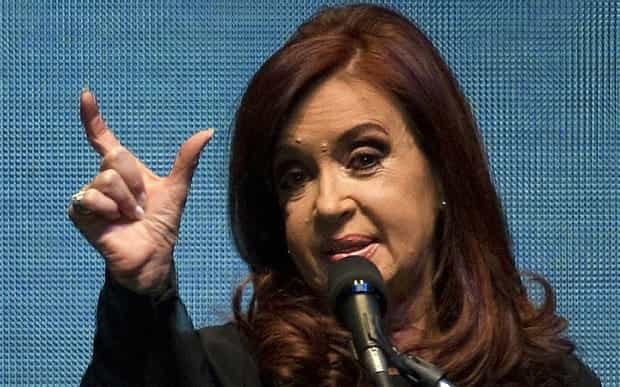
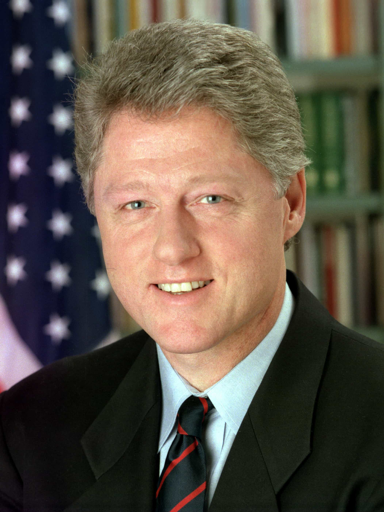

< < < Back
Most Female Leaders Are Only Successful Because Of Their Male Relatives – Return Of Kings
Hillary Clinton announced her candidacy for President on Sunday. Should she win, which is more than possible and according to many experts likely, she will join a coterie of other female leaders who have exploited their family connections to reach the top. Despite portraying herself as a driven, hard-working woman, and being described as a modern, electrifying force by her supporters, Hillary reflects the importance of who you’re related to even more than George H. W. and George W. Bush (and perhaps Jeb before too long).
The “feminists” who used male connections
Look at the following list of current, recent, or historical female heads of government or state. It is a list that Hillary Clinton may join come Election Day 2016.
Cristina Fernández de Kirchner, President of Argentina (2007-): She succeeded her late husband, Néstor Kirchner.
Park Geun-hye, President of South Korea (2013-): Her father, Park Chung-hee, ruling from 1961 until his assassination in 1979, was the infamous general and President who revitalized the South Korean economy using authoritarian methods and political repression.
Benazir Bhutto, Prime Minister of Pakistan (1988-90 and 1993-96): Her father, Zulfikar Ali Bhutto, served as Prime Minister until a decade before she first assumed the role herself.
Indira Gandhi, Prime Minister of India (1980-84): Her father, Jawaharlal Nehru, was India’s inaugural Prime Minister.
Megawati Sukarnoputri, President of Indonesia (2001-04): Her father was the notorious Sukarno, Indonesia’s first President.

Argentina’s Crisina Kirchner… “Merit had *this* much to do with me becoming President… divided by a hundred.”
Gloria Macapagal-Arroyo, President of the Philippines (2001-2010): Daughter of former President Diosdado Macapagal.
Corazon Aquino, President of the Philippines (1986-92): Described herself as a “plain housewife” and was the spouse of Benigno Aquino, Jr., a senator and the most virulent critic of the infamous autocrat Marcos. Benigno was assassinated and Corazon assumed the role of opposition leader, then head of state.
Soong Ching-ling, Vice President of the People’s Republic of China (1959-75) and Honorary President of the People’s Republic of China (1981): Wife of Sun-Yat Sen, who led the 1911 Revolution establishing the Republic of China and is still revered by Chinese in both mainland China and Chinese Taipei (Taiwan).
María Estela Martínez Cartas de Perón, President of Argentina (1974-76): Succeeded her husband, Juan, and gave Cristina Kirchner a precedent to follow.
This is a significant list of some of the world’s most famous female heads of state or government. If 99% of men in a particular country had run for or been appointed to these positions at the same time, it would have been a greater victory for egalitarianism and the common people than any of these women assuming the title.
In fact, the only “game-changing” 20th and 21st century female leaders not on this list are probably Golda Meir of Israel and Margaret Thatcher of Great Britain and Northern Ireland. What I have related to you above only exemplifies the victory of privileged, usually wealthy women who were able to seize their family name or male relatives’ fame and keep the facade of “feminism” and “merit” cloaked around them.
Hillary’s background

Since when does being First Lady qualify you to represent a state as its Senator? I guess if you’re in the limelight with no political responsibility for eight years.
Hillary, whatever your opinions on her political beliefs, is clearly intelligent. She didn’t get the highest SAT score or get the most college offers, but she graduated in the top twentieth of her high school class, did very well at Wellesley College, and completed her Juris Doctor degree at Yale. She was described as one of America’s 100 most promising lawyers as well.
After her marriage and during her time as Arkansas’s First Lady, she was a director on the board of Walmart and other commercial entities, even if directorships are more casual than the much more draining roles of CEO or other executive positions.
There are certainly other noteworthy things I can add here. But her resumé is no more impressive than hundreds or even thousands of others who were and still are churned out of America’s good or great colleges and who find levels of commercial or professional success in their chosen field.
What Hillary needed, however, was a man named Bill Clinton.
Senator, Secretary of State and maybe President… all because of Bill

The best part of Hillary’s resumé.
Irrespective of the achievements you can piece together from her early life, her trajectory after becoming Arkansas’ First Lady depended on her husband’s fame and clout. Because of Bill’s two terms in the White House, Hillary was constantly in the public eye. Her “sponsoring” of the Clinton healthcare plan came without risks, as she was the White House’s official hostess and not a politician. The job revolved around free networking for eight years and any decision made wasn’t hers to be accountable for.
Hillary also received, contrary to what some say, considerable sympathy after revelations about her husband’s soiling of the Oval Office with Monica Lewinsky. And as she ran for the post of New York Senator, she capitalized on the departing President’s very favorable and greatly rehabilitated approval ratings.
When she announced her Democratic Presidential nomination, which she later lost to Obama, she again shamelessly milked her husband’s name and prestige. The personal brand she brought to the table, her stint as First Lady of a state, then a nation, and her time in the Senate, all stemmed from Bill in one way or another. And this same Bill was with her at every stage of the journey, ensuring that his wife only lost to Obama by a respectable margin.
One thing led to another and Hillary became Obama’s first Secretary of State. Largely through her gender, her supporters were able to “misogynize” anyone who questioned her woeful handling of the Benghazi incident in which American lives were lost. Her appearance without makeup, obviously deliberate, allowed her lapdogs to further emphasize how poor Hillary was being objectified and therefore assessments about her job performance were sexist.
Feminism uses even more Newspeak
The forces behind Hillary, which see her as an empowering choice rather than a privileged, connected one, is the same force which persuaded Republican Colin Powell to vote for Obama because a black President would be “good for America.” It substitutes political correctness and undeserved advantage for proper context and actual ability.
Hillary Clinton is not a self-made woman and has gloriously ridden the coattails of Bill. She does not deserve to be President of the United States, whether or not she is voted into the Oval Office.
Read More: Why Lithuania Should Ban Female Leaders